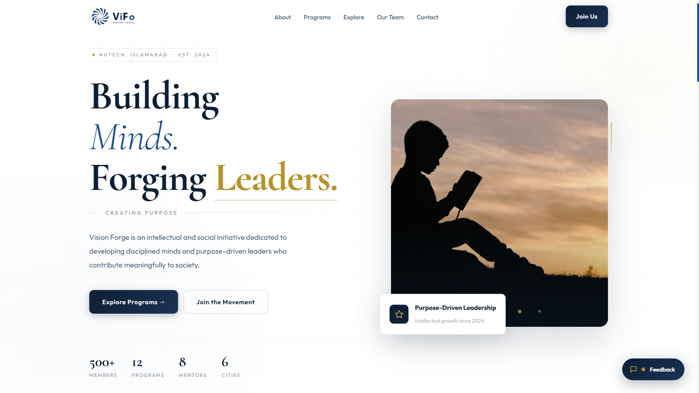
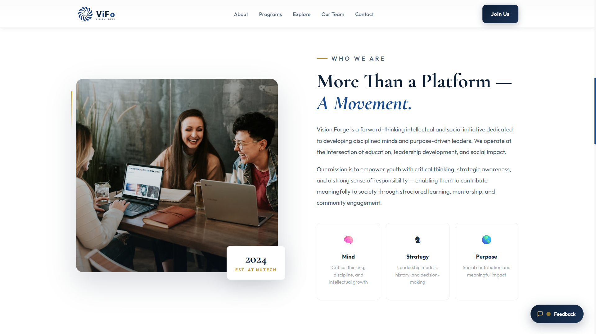

Featured Project
Vision Forge
A creative web development project and digital innovation showcase — built to demonstrate modern UI design, interactive experiences, and purposeful front-end engineering. Live at visionforgeafg.org.
Focus
Modern UI design and interactive web experiences
Stack
HTML, CSS — hand-crafted without frameworks
Status
Live and active at visionforgeafg.org
Year
2024 — Present
HTML
CSS